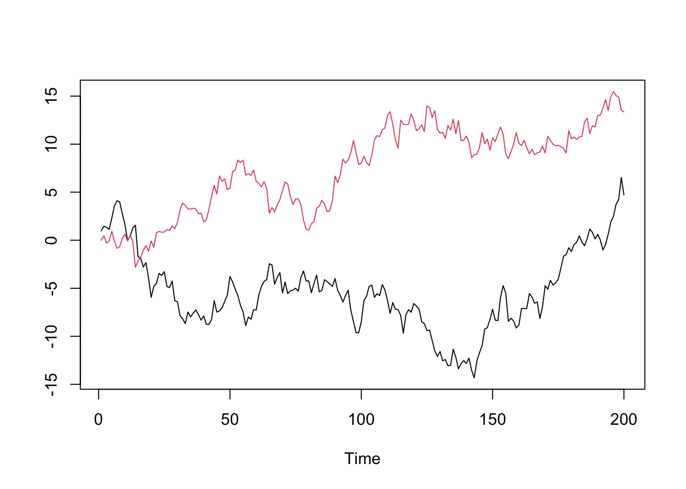
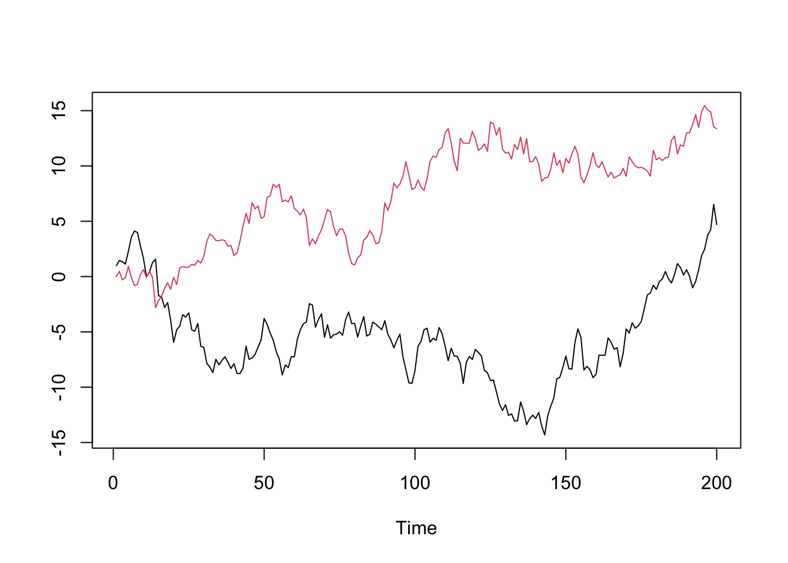
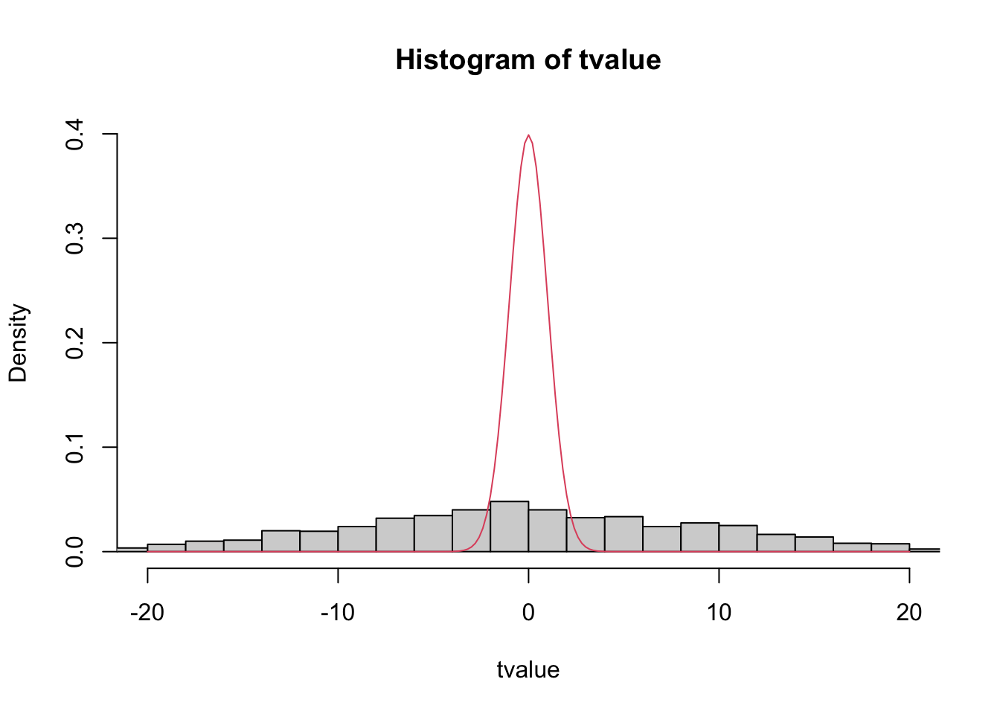

set.seed(2024)
x = cumsum(rnorm(200))
y = cumsum(rnorm(200))
ts.plot(cbind(x,y), col=1:2)
It is said, all stationary series are alike, but each non-stationary series is non-stationary in its own way (remember Leo Tolstoy’s famous quote: all happy families are alike; each unhappy family is unhappy in its own way.)
In all previous chapters, we have been working on stationary processes. We have shown that similar regression techniques and asymptotic results hold for stationary processes as for \(iid\) observations, albeit not exactly the same. If a time series is not stationary, we transform it to stationary by taking differences.
This chapter is devoted to study non-stationary time series. Special attention is given to unit root processes. We will see the theories involving non-stationary processes are entirely different from those applied to stationary processes. This makes unit root analysis an rather independent topic. The obsession with unit root in academia have faded away in recent decades (I do not know if this assessment is accurate). Despite the topic posses immense theoretical interest, it does not seem to provide proportionate value for applied studies. Nonetheless, the topic is indispensable for a comprehensive understanding of time series analysis.
We will focus on two types of non-stationary processes: trend-stationary processes and unit root processes, which are the most common types of non-stationary series we would encounter in economic and finance. Non-stationary series with exponential growth can be transformed into linear trend, hence is not of particular interest. We will start with the relatively easy tread-stationary processes, and spend most of the paragraphs on unit root processes.
We start by pointing out that, it is very dangerous to blindly include non-stationary variables in a regression. To illustrate this, we simulate two random walks:
\[ \begin{aligned} x_{t} &= x_{t-1} + \epsilon_{t},\quad\epsilon_{t}\overset{iid}\sim N(0,\sigma_X^2)\\ y_{t} &= y_{t-1} + \eta_{t},\quad\eta_{t}\overset{iid}\sim N(0,\sigma_Y^2) \end{aligned} \]
\(\epsilon_t\) and \(\eta_t\) are independent to each other.
set.seed(2024)
x = cumsum(rnorm(200))
y = cumsum(rnorm(200))
ts.plot(cbind(x,y), col=1:2)
We would expect the two series completely uncorrelated, as they are two independent random processes. However, if we regress \(y_t\) on \(x_t\), we would likely find a very strong correlation. This is called a spurious regression.
\[ y_t = \alpha + \beta x_t + u_t \]
coeftest(lm(y ~ x))
t test of coefficients:
Estimate Std. Error t value Pr(>|t|)
(Intercept) 5.895196 0.510099 11.557 < 2.2e-16 ***
x -0.267537 0.075726 -3.533 0.0005113 ***
---
Signif. codes: 0 '***' 0.001 '**' 0.01 '*' 0.05 '.' 0.1 ' ' 1Note that if we difference the two series to stationary, the spurious correlation disappears.
coeftest(lm(diff(y) ~ diff(x)))
t test of coefficients:
Estimate Std. Error t value Pr(>|t|)
(Intercept) 0.068500 0.066740 1.0264 0.3060
diff(x) -0.074427 0.065236 -1.1409 0.2553If we approximate the distribution of the \(t\)-value for \(\hat\beta\) with run Monte Carlo simulations, we would find the distribution is not Gaussian and has much heavier tails. That means we would much more likely to find significant results with spurious regression.
# Monte Carlo simulation
tvalue = sapply(1:1000, function(i) {
x = cumsum(rnorm(200))
y = cumsum(rnorm(200))
# extract t-value
summary(lm(y~x))$coef['x','t value']
})
# plot the density with Gaussian curve
{
hist(tvalue, prob = TRUE, breaks = 40, xlim=c(-20,20), ylim = c(0,.4))
range = seq(-20, 20, by = .2)
lines(range, dnorm(range), col = 2)
}
Therefore, the conventional statistical inference against non-stationary series is totally misleading. The rest of the chapter will demystify the nature of spurious regression and discuss how we can properly deal with non-stationary time series.